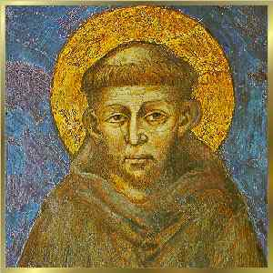
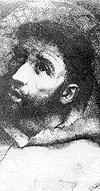
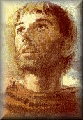
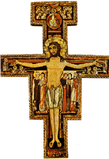
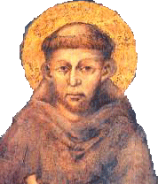

UMA OVELHA QUASE NEGRA - Seu pai chamava-se
Pedro Bernardone, veio de Luca e 
Francisco era o filho mais velho, nasceu em fins de 1181 ou no princípio do ano 1182, e foi batizado na Catedral de São Rufino em Assis, no dia 26 de Setembro de 1182. No batizado recebeu o nome de João, escolhido pela mãe e parentes. O pai que se encontrava ausente numa viagem de negócios através da França, quando regressou, decidiu mudar o nome do menino para Francisco.
Desde jovem ajudava no estabelecimento comercial de seu pai e mostrava grande aptidão para comercializar, porque possuía modos educados e tinha imaginação, tanto assim que chegavam a comentar que ele era “mais ganancioso e mais esperto que o pai”. Todavia, tinha um grave defeito, não era econômico, mostrava-se loucamente pródigo com os amigos, que eram muitos!
Sendo o moço mais rico de Assis, adquiriu também a fama de “o maior gozador” . Todas as noites reunia seus companheiros de vida noturna e faziam as barulhentas “farras” em sua cidade. As “farras” em si, consistiam em laudos banquetes, com muita comida e bastante bebida, e depois, totalmente embriagados, percorriam as ruas da pequena cidade cantando a plenos pulmões, versejando, rindo e fazendo mofas, perturbando o repouso e o sono dos pacíficos cidadãos. Eram brincadeiras de rapazes solteiros, que embora cheias de liberdade, não excediam os limites da moral. Naquela região, embora os rapazes tivessem muita liberdade, o grupo de Francisco sempre se mostrou respeitador e exemplar no que concernia às relações com as mulheres. Ele se preocupava e esmerava na observância da moral e no devido respeito às mulheres de um modo geral, inclusive não admitindo nem brincadeiras sobre o sexo.
Também, sabia respeitar os mais velhos e os pobres. Quando se iniciava no comércio de tecidos, tratou mal um mendigo que pedira esmola. Arrependeu-se profundamente daquele comportamento e nunca mais negou uma esmola a quem lhe pedisse.
CAVALEIRO DA TÁVOLA REDONDA

Dois anos após aquele acontecimento armou-se outro grande conflito, agora os nobres da Itália se uniam para não permitir a ocupação do país pelos estrangeiros. E revelaram muita coragem e disposição, lutando com patriotismo para expulsar inclusive aqueles que já se encontravam em solo italiano. Diante daquela realidade, Francisco novamente foi envolvido por outra exaltação febril, porque imaginava que aquela era de fato, a ocasião que ele aguardava para tornar-se um grande cavaleiro. Alistou-se na guarnição militar e influenciou seus amigos a acompanhá-lo.
Numa bela manhã, partiu com seus companheiros para Apúlias, local estabelecido para encontro com a tropa de elite. Tomaram a estrada que passa por Foligno em direção a Roma. Todavia, em Espoleto, teve que parar em face de ter sido acometido de uma violenta febre que o levou para cama. Com dificuldade voltou a Assis e ficou em tratamento durante cinco longos meses.
INÍCIO DA CONVERSÃO
No outono de 1204 sua saúde começou a se
restabelecer. 
Aos poucos foi reencontrando suas amizades e seguindo com as mesmas brincadeiras e banquetes noturnos regados com muita bebida.
Entretanto, no verão de 1205 começou a perder o entusiasmo por aquela maneira de viver. Gradativamente decidiu se isolar de seus companheiros, impulsionado por uma força interior que dava outra direção à sua vida. Assim, ora se escondia e permanecia por longo tempo em lugares ermos, ora caminhava solitário pelas estradas, pelos campos e colinas. Sua mente trabalhava e um turbilhão de idéias envolviam sua cabeça, mas não sabia o que fazer. Procurava conversar com DEUS, fazia perguntas e aguardava no coração a inspiração de uma resposta. Dedicou-se a oração e a contemplar as passagens evangélicas da vida do SENHOR, principalmente a Paixão, Morte e Gloriosa Ressurreição de JESUS. Então teve a oportunidade de experimentar o início de uma íntima doçura, que nascia da intensa busca de sua alma pela misericórdia infinita do CRIADOR.

Mas não suportava olhar para os leprosos que existia em grande quantidade, porque o seu estomago ficava repugnado com aquele cheiro de pobre que emanava das chagas. Por isso se afastava e evitava passar próximo deles.
Certo dia, numa pequena gruta, invocava a DEUS como fazia ultimamente, pedia perdão pelos seus pecados e suplicava uma orientação para a vida. Naquele silêncio, onde só se ouvia o cântico dos pássaros, uma voz lhe disse:
“Francisco, se você quer fazer a Minha Vontade, deve desprezar todas as coisas que os seus sentidos gostam! Desde o momento que assim começar a proceder, tudo aquilo que antes lhe parecia agradável, tornar-se-á amargo e insuportável; e tudo aquilo que você detestava, transformar-se-á em prazer e numa grande doçura!”
Estas palavras se enraizaram no fundo
de seu coração e tornaram uma orientação segura para a sua existência. Onde
estivesse, cavalgando ou andando pelo vale umbro, meditava e refletia sobre a
profundeza do significado. Numa manhã, cavalgando solitariamente próximo a
Assis, seu cavalo subitamente parou e quis recuar, à distância de uns 20
metros vinha um leproso com a roupa que o identificava. Francisco espantou-se!
Seu primeiro impulso foi afastar-se. Todavia, ao mesmo tempo, em sua mente
vibraram cadenciadas as palavras que tinha ouvido e guardava no interior do
coração: “... tudo aquilo que você
detesta transformar-se-á em prazer indizível!”
Ora, que coisa havia no mundo para ele mais horrível que um leproso" 
Por isso, respirando fundo e unindo todas as suas forças, desceu do cavalo, aproximou-se do leproso, deu-lhe uma esmola e piedosamente beijou-lhe a mão apodrecida, mal cheirosa, coberta de chagas e úlceras. Sua alma tremeu de emoção ... Sem saber como, montou o cavalo e com o coração disparado, pulando dentro do peito, seguiu vitoriosamente o seu caminho. O CRIADOR inundou-lhe a alma com uma imensa ternura e uma alegria tão transbordante, que lhe permitiu sorrir, dar gritos sonoros de júbilo, abraçar com força e de modo carinhoso o seu animal, comovido e repleto de felicidade, por aquela vitória sobre a sua vontade. Depois olhando para o Céu, disse: “Eu te amo meu SENHOR! Eu te amo!”